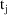
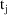
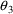
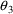
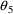
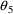

NONMEM Users Guide Part V - Introductory Guide - Chapter 7
1. What This Chapter is About
2. The $SUBROUTINE Record
2.1. Choosing an ADVAN Subroutine: StandardPharmacokinetic Models
2.2. Choosing a TRANS Subroutine: AlternativeParameterizations
3. $PK Abbreviated Code
3.1. Syntax
3.2. When are $PK Statements Evaluated?
3.3. Time Varying PK parameters
4. $PK Statements for Individual Data
4.1. Basic and Additional Parameters
4.2. Alternative Parameterizations using $PKStatements
4.3. Scale Parameters
4.3.1. Scaling by a Known Constant
4.3.2. Scaling by a Parameter: Conditional Statementsand Indicator Variables
4.3.3. Scaling by a Data Item
4.4. Bioavailability Fraction Parameters
4.5. Output Fraction
5. $PK Statements for Population Data
5.1. Structural Part of Parameter Models
5.1.1. Linear Models
5.1.2. Multiplicative Models
5.1.3. Saturation Models
5.1.4. Models with Indicator Variables
5.2. Population Random Effect Models
5.3. Models for Interindividual Errors
5.3.1. Additive/Multiplicative Models
5.3.2. Other Models
5.4. Restrictions on Random Variables
NONMEM Users Guide Part V - Introductory Guide - Chapter 7
Chapter 7 -
$SUBROUTINE Record and $PK Record
1. What This Chapter is About
This chapter tells how to
write a $SUBROUTINE record and how to write a simple $PK
record for both individual and population data. This chapter
is meant to be read in parallel with Chapters 3 and
4.
2. The $SUBROUTINE Record
The $SUBROUTINE record
describes which pharmacokinetic model is to be used. Recall
that NONMEM calls a subroutine named PRED to compute the
predicted value. The user must choose to use his own PRED
subroutine or to use the PREDPP package. In this text it is
assumed that the PREDPP package is chosen.
2.1. Choosing an ADVAN Subroutine: StandardPharmacokinetic Models
The PREDPP Library
includes subroutines which are pre-preprogrammed, each for a
specific pharmacokinetic model. They are:
ADVAN1 (One Compartment Linear Model)
ADVAN2 (One Compartment Linear Model with First Order
Absorption)
ADVAN3 (Two Compartment Linear Model)
ADVAN4 (Two Compartment Linear Model with First Order
Absorption)
ADVAN10 (One Compartment Model with Michaelis-Menten
Elimination)
ADVAN11 (Three Compartment Linear Model)
ADVAN12 (Three Compartment Linear Model with First Order
Absorption)
PREDPP calls only one subroutine, ADVAN; the different names
above are external names distinguishing different instances
of the ADVAN routine in the PREDPP Library. The name
’ADVAN’ is used because the routine advances
(i.e. updates the state of) the kinetic system from one
point in time to the next. There are additional ADVAN
routines in the Library which implement more general types
of pharmacokinetic models; see Chapter 12, Section 2.2. Each
of the ADVAN’s can be used for either individual or
population data. The (external) name of the ADVAN to be used
is coded on the $SUBROUTINE record; this also implies that
PREDPP is to be used. As an example, the following record
specifies the One Compartment Linear Model:
$SUBROUTINE ADVAN1
The ADVAN’s are
described in Appendix 1. They share certain
features.
|
1. |
|
The compartments are
numbered. These numbers are used in two places. First, they
are used in the CMT and PCMT data items to describe specific
compartments. Second, the compartment number n is part of
the name of PK parameters such as compartment scale (Sn), as
discussed below. |
|
|
2. |
|
Each model has a
default observation compartment, which for each of
the above ADVAN’s happens to be the central
compartment. If an event record contains an observation
(i.e. is an observation event record), the prediction
associated with that record will be the scaled drug amount
in this compartment, unless the CMT data item on the record
specifies differently. The prediction associated with a
non-observational event record will again be the scaled drug
amount in this compartment, unless the PCMT data item on the
record specifies differently. |
|
|
3. |
|
Each model has a
default dose compartment. Unless specified
differently by the CMT data item, it is understood that a
dose is input into this compartment. With ADVAN1, ADVAN3,
and ADVAN10, this is the central compartment. With ADVAN2
and ADVAN4, a drug depot compartment is part of the model
and is the default dose compartment. In these cases, if a
dose is to go directly into the central compartment, its
compartment number (2) must be present in the CMT data item
of the dose record. Note that it is never required
that there be doses into the depot compartment. In a study
involving mixed oral and IV doses, for example, some
patients may receive only IV doses. All dose event records
for such patients will have the value 2 in the CMT data
item. |
|
|
4. |
|
Each model has an output
compartment. The amount of drug in this compartment is the
accumulated amount of drug eliminated from the system and
typically represents the amount of drug which accumulates in
the urine. This compartment is special. It may not receive a
dose. It is initially off, and it remains off (so that the
amount therein remains zero) until it is explicitly turned
on by an other type event record which has the output
compartment’s number in the CMT data item. It is
computed by "mass balance", as follows. Between
any two points in time, it increases by an amount equal to
the amount of drug in the other compartments at the first
point in time, plus the amount added via doses between the
two time points, less the amount remaining in the other
compartments at the second point in time. (This difference
is multiplied by an output fraction (F0) parameter, if F0 is
computed by the PK routine.) The output compartment can be
turned off (i.e. its amount reset to zero). If the
compartment is interpreted as a urine compartment, this is
equivalent to "emptying" the compartment. This is
done by putting the negative of its number in the CMT
data item of an other type or observation event
record.† |
|
----------
†
This is also permitted with output-type compartments; see
Chapter 12, Section 2.8.
----------
On event
records, the output compartment is referred to by the
compartment number given in Appendix 1. A PK parameter which
refers to the output compartment may use either this number
or 0 (zero). Thus, F0 and F2 both denote the output fraction
for ADVAN1; similarly, S0 and S4 both denote the scale for
ADVAN4’s output compartment. SC denotes the scale for
any ADVAN’s central compartment.
|
5. |
|
Each model has a set of
basic (required) pharmacokinetic (PK) parameters, which are
the microconstants used to compute the amounts of drug via
the kinetic equations for the model. Each one also has a set
of additional (optional) PK parameters, including
compartment scales (Sn), bioavailability fractions (Fn), and
output fraction (F0). Compartment scales are typically used
to convert amounts to concentrations, but they also can be
used for other purposes. Bioavailability fractions multiply
dose amounts. The output fraction is described
above. |
|
|
6. |
|
Each model’s basic
and additional pharmacokinetic parameters must be computed
for it by a subroutine named PK. The error model must be
described by a subroutine named ERROR. $PK and $ERROR
abbreviated code provide an easy way to specify the
essential computations that must occur in these
subroutines. |
|
2.2. Choosing a TRANS Subroutine: AlternativeParameterizations
As discussed in Chapter
3, we may prefer to use pharmacokinetic parameters in our PK
routine other than the microconstants used by PREDPP.
Appendix 2 shows several commonly-used parameterizations.
The PREDPP package includes a family of subroutines called
TRANS routines which are pre-programmed to translate
(reparameterize) from these commonly used parameterizations
to the ones expected by PREDPP. Appendix 2 also gives the
TRANS routine for each alternative parameterization. As with
ADVAN, TRANS is the name of the routine. The names given in
Appendix 2 are instances of external subroutine names used
in the PREDPP Library. The first member of the family,
TRANS1, simply translates a set of microconstants into these
same microconstants and must be included in the NONMEM load
module in lieu of the others when the $PK abbreviated code
computes the microconstants.
The user must describe on
the $SUBROUTINE record which TRANS routine is to be used.
For example, the following record requests the One
Compartment Linear Model parameterized (in the PK routine)
in terms of clearance and volume.
$SUBROUTINE ADVAN1,TRANS2
When a TRANS other than TRANS1 is used, only the alternative
parameters listed in column 1 need be assigned values in the
$PK abbreviated code. In this example, these are CL, V, and
KA.
Note that TRANS1 is the
default. That is, if no TRANS routine is listed on the
$SUBROUTINE record, it is assumed that TRANS1 is intended.
This is the case in the examples of Chapter 2. Alternative
parameterizations using TRANS1 are discussed later in this
chapter in Section 4.2.
3. $PK Abbreviated Code
$PK abbreviated code
consists of a block of $PK statements, one per line,
which look much like FORTRAN statements. In fact, they are a
subset of FORTRAN: simple assignment statements, certain
kinds of conditional (IF) statements, and certain kinds of
CALL, WRITE, PRINT, RETURN, OPEN, CLOSE, REWIND statements.
The $PK abbreviated code must be preceded by a record
containing the characters "$PK". This record and
the abbreviated code constitute the $PK
record.
$PK statements must
include assignment statements giving a value to every basic
PK parameter for the given ADVAN and TRANS combination, as
listed in Appendix 1 (when TRANS1 is used) or column 1 of
Appendix 2 (when a different TRANS is used). They may also
include assignment statements giving values to one or more
of the additional PK parameters.
3.1. Syntax
We assume the readers of
this document are familiar with writing FORTRAN assignment
and conditional statements. If not, the examples in this and
the following chapter should give adequate guidance. FORTRAN
statement numbers are not used, and the statements may start
in any column. As with all NM-TRAN records, blank lines are
permitted, and all text following a semi-colon (;) is
ignored and may be used for comments. FORTRAN 95
continuation lines are permitted. An ampersand (&) is
used at the end of a line to be continued.
The statements are built
using the following: elements of the THETA array (e.g.,
THETA(1)); constants; names of input data items appearing on
the $INPUT record; names of previously-assigned variables;
FORTRAN library functions SQRT, LOG, LOG10, EXP, SIN, COS,
ABS, TAN, ASIN, ACOS, ATAN, INT, MIN, MAX, and MOD; NONMEM
functions GAMLN and PHI†; arithmetic operators +, -,
*, /, **; and arithmetical and logical expressions using all
of the above.
----------
† PHI gives
the value of the cumulative distribution function. GAMLN
gives an accurate evaluation of the logarithm of the gamma
function.
----------
In addition, statements
may include representations for random variables such as
ETA(1) and EPS(3). Input data items have the values
appearing on the current event record, and thus these values
may change from one event record to the next. A user-defined
variable name follows the usual FORTRAN rules (1-6 letters
and digits, starting with a letter) and may not be
subscripted. It is defined ("declared") by being
assigned a value (i.e., by appearing to the left of = in an
assignment statement).
Nested parentheses and
nested IF statements are allowed. A pair of parentheses
enclosing a subscript may be nested within another pair of
parentheses. All subscripts must be constants (e.g.
THETA(1)). The statements are evaluated sequentially, in the
order in which they appear.
All variables, constants,
and expressions are evaluated using floating-point (not
integer) arithmetic. Single or double precision function
names and constants may be used interchangeably.
3.2. When are $PK Statements Evaluated?
$PK statements are
normally evaluated with every event record for both
population and individual data. This enables the amounts in
the compartments to be updated from event time to event time
using current values of the data items. This may be more
frequent than is necessary. In the theophylline example of
Chapter 2, no data item is used in the $PK statements. In
the phenobarbital example, the data item used, WT, is
constant within any individual’s data. In these cases,
it is sufficient, and it can save noticeable amounts of run
time, to evaluate the $PK statements once per individual
record. PREDPP can be instructed that the set of event
records with which the $PK statements are evaluated are to
be limited in some way (see Chapter 12, Section 2.7). The
CALL data item can be used to force the statements to be
evaluated with any event records.
Certain advanced forms of
dosing (additional and lagged doses; see Chapter 12,
Sections 2.4 and 2.5) introduce doses at times which do not
necessarily coincide with any event record. PREDPP does not
normally evaluate the $PK statements at such times, but can
be instructed to do so (See Chapter 12, Section 2.6). Model
event time parameters can be used to instruct PREDPP to
evaluate the $PK statements at specified times (See Chapter
12, Section 2.7).
3.3. Time Varying PK parameters
The state of the kinetic
system at a given event time is obtained using PK parameter
values computed with the data items on the event record.
Using these parameter values the system is advanced to the
event time from the last event time. Population models
sometimes use data items which change value within
individual records and thus give rise to PK parameters whose
values change within individual records. In Chapter 4,
Section 3.1.6, it is pointed out that it is desirable for
the value of such a data item on the event record to be that
value holding at the midpoint of the interval between the
current event time and the last previous event time, since
the system is advanced over this interval using the PK
parameters determined with this value.
If the data item changes
too rapidly for this value to fairly represent the data item
over the entire time period, it is possible to subdivide the
interval into smaller intervals. Event records with EVID=2
(other type event records) can be introduced for this
purpose. For example, between two consecutive event records
and
, with event times
 and
and
 , one might introduce two new other type event records
and
, with event times
and
, into the data set. The value of the data item in
, one might introduce two new other type event records
and
, with event times
and
, into the data set. The value of the data item in
 will be used to compute the PK parameters used to advance
the system over the interval

to
will be used to compute the PK parameters used to advance
the system over the interval

to
 and should be the value of the data item holding at the
midpoint of this interval. Similarly, the value of the data
item in
and should be the value of the data item holding at the
midpoint of this interval. Similarly, the value of the data
item in
 will be used to compute the PK parameters used to advance
the system over the interval
to
and should be the value of the data item holding at the
midpoint of this interval, and so on.
will be used to compute the PK parameters used to advance
the system over the interval
to
and should be the value of the data item holding at the
midpoint of this interval, and so on.
4. $PK Statements for Individual Data
4.1. Basic and Additional Parameters
With individual data, the
parameters to be estimated are (usually) the
individual’s PK parameters, and therefore, elements of
 should be associated with these PK parameters. (NONMEM
estimates the elements of the
should be associated with these PK parameters. (NONMEM
estimates the elements of the
 vector.) By an individual’s PK parameters, we mean
here the basic PK parameters and, possibly, some additional
PK parameters (e.g. a bioavailability fraction, or volume of
distribution when the latter is not a basic PK parameter).
To illustrate, in the theophylline example of Chapter 1
there occur these $PK statements
vector.) By an individual’s PK parameters, we mean
here the basic PK parameters and, possibly, some additional
PK parameters (e.g. a bioavailability fraction, or volume of
distribution when the latter is not a basic PK parameter).
To illustrate, in the theophylline example of Chapter 1
there occur these $PK statements
$PK
KA=THETA(1)
K=THETA(2)
The parameters KA and K are the basic PK parameters for
ADVAN2 and TRANS1 (the default TRANS routine). They are used
to compute the amounts in the compartments. Typically,
however, the observations are concentrations. A scale
parameter is used to convert the amount into a
concentration. Thus, in the theophylline example we see two
additional $PK statements:
V=THETA(3)
S2=V
Here, V is a user-defined variable standing for the volume
of distribution of the central compartment. It is neither a
basic nor additional parameter. The parameter S2 is the
scale parameter for the central compartment; upon dividing
the amount in that compartment by S2, the concentration
results. (An observation is usually predicted by an amount
for a compartment divided by that compartment’s scale
parameter). In fact, these two statements could be replaced
by the single statement
S2=THETA(3)
However, it may be helpful to the user to distinguish in his
code between the calculation of the central volume itself
and the calculation of the scale parameter.
There is no particular
need for certain elements of
 to be associated with certain PK parameters. In the above
example, the roles of
to be associated with certain PK parameters. In the above
example, the roles of
 and
and
 could have been reversed. NONMEM’s
could have been reversed. NONMEM’s
 vector may contain more or fewer elements than there are PK
parameters, depending on how these parameters are
modeled.
vector may contain more or fewer elements than there are PK
parameters, depending on how these parameters are
modeled.
PK parameters must be
explicitly modeled, usually in terms of parameters to be
estimated and user-defined data items; the user communicates
this model with the $PK statements. If a certain
parameter’s value is known a priori (say, S2
has the known value 500), there are several ways the value
can be incorporated into the $PK statements. The following
examples show how it can be done via a constant, via a fixed
element of
 , and via a (differently-named) data item:
, and via a (differently-named) data item:
S2=500
$THETA .6
9. (500 FIXED)
$PK
S2=THETA(3)
Here, rather than be estimated,
 is constrained to the value 500. This is discussed in
Chapter 9.
is constrained to the value 500. This is discussed in
Chapter 9.
$INPUT ...
VOL ..
$PK
S2=VOL
Here, VOL is assumed to have the value 500 on the data
records. When the data is from a population, this third
technique allows a unique value of VOL to be supplied for
each individual.
4.2. Alternative Parameterizations using $PKStatements
It is possible to use an
alternative parameterization while still using TRANS1. The
reparameterization is performed within the $PK statements by
explicitly computing the microconstants from the alternative
parameters. Such "reparameterization" statements
are given in column 2 of Appendix 2. They must follow the
assignment statements that give the alternative parameters
their values, as in the phenobarbital example of Chapter
2.
The advantage of using
$PK statements to reparameterize, rather than using a TRANS
subroutine, is that the NONMEM-PREDPP load module will then
always consist of the same set of subroutines for a given
choice of ADVAN, which simplifies the job of creating and
running it. It will also run slightly faster. We assume in
this document that this approach is taken.
Other parameterizations
are possible besides the ones in Appendix 2. For example,
with ADVAN1 and TRANS1, one might code:
CL=THETA(1)
K=THETA(2)
V=CL/K
S1=V
The ability to express a
large variety of modeling possibilities with NONMEM-PREDPP
provides great freedom and flexibility, but as always with
flexible modeling capability, certain pitfalls arise.
Suppose, for example, that with a one compartment system the
compartment amount, rather than the concentration is
observed. With ADVAN1 and TRANS1 the statements
CL=THETA(1)
V=THETA(2)
K=CL/V
will lead to difficulty because only the ratio of
 to
to
 affects the amount in the compartment, and therefore, the
data do not allow
affects the amount in the compartment, and therefore, the
data do not allow
 and
and
 to be separately estimated. The statements should read:
to be separately estimated. The statements should read:
K=THETA(1)
It is important to
remember that only those elements of
 which affect the predictions of observations will be
estimated by NONMEM. Here is some problematic code using
ADVAN1 with TRANS1:
which affect the predictions of observations will be
estimated by NONMEM. Here is some problematic code using
ADVAN1 with TRANS1:
K=THETA(1)
V=THETA(2)
CL=THETA(3)
S1=V
Once again, NONMEM will be unable to produce separate
estimates of all elements of
 . The kinetics of a simple one compartment system cannot be
determined by three independent parameters. With TRANS1,
PREDPP itself does not "know" about the
relationship K=CL/V which defines a dependency among the
parameters. Indeed, the parameters CL and V are both
regarded as user-defined variables. The value of

has no effect on the prediction. Were it not for the fact
that S1 is set equal to V, the value of
. The kinetics of a simple one compartment system cannot be
determined by three independent parameters. With TRANS1,
PREDPP itself does not "know" about the
relationship K=CL/V which defines a dependency among the
parameters. Indeed, the parameters CL and V are both
regarded as user-defined variables. The value of

has no effect on the prediction. Were it not for the fact
that S1 is set equal to V, the value of
 would have no effect on the prediction either. With TRANS2
this code is also incorrect for essentially the same reason.
Here, K is regarded as a user-defined variable, and the
relationship CL=K*V is not "known" to PREDPP.
(PREDPP does know that CL/V is the rate constant of
elimination, but it does not recognize the variable K as
denoting this rate constant, and
would have no effect on the prediction either. With TRANS2
this code is also incorrect for essentially the same reason.
Here, K is regarded as a user-defined variable, and the
relationship CL=K*V is not "known" to PREDPP.
(PREDPP does know that CL/V is the rate constant of
elimination, but it does not recognize the variable K as
denoting this rate constant, and
 has no effect on the prediction.)
has no effect on the prediction.)
4.3. Scale Parameters
Scale parameters are
mentioned in Section 2.1. Predicted compartment amounts are
divided by them and are thus converted to predicted
concentrations. They are only needed for those compartments
whose concentrations are directly observed. With ADVAN3, for
example, the peripheral compartment’s scale S2 does
not need to be computed explicitly if there are no
observation events giving measured values of concentrations
in the peripheral compartment. Predicted values for this
compartment may still be plotted against time, for example,
but these values need not be scaled drug amounts; the
(unscaled) amount alone is sufficient to show the shape of
the curve. (The various volume parameters shown in Appendix
2 must be modeled when they are used as basic parameters,
but they need not be assigned as values to compartment scale
parameters.) Any scale parameter which is not modeled by $PK
statements is assumed to be 1 (i.e., predicted values are
always amounts).
4.3.1. Scaling by a Known Constant
In Chapter 3, Section
2.2.1, the units of V were changed from kiloliters to liters
using the model:

This can be coded in a
$PK statement similar to the way it appears here, except
that the compartment number must be specified:
S1=V/1000
Basic PK parameters may also be rescaled in this
manner.
4.3.2. Scaling by a Parameter: Conditional Statementsand Indicator Variables
In Chapter 3, Section
2.2.2, the following model appeared:
There are two ways this
can be coded in $PK statements. The
 data item can be tested directly, or an indicator variable
can be used. An indicator variable is a variable whose value
is 0 or 1. It may be identified with an input data item, or
it may be a user-defined variable in the $PK statements. For
example, suppose variable ASY is to be used as an indicator
variable. If some input data item is given value 1 when
assay 1 was used and value 0 when assay 2 was used, then
this data item could simply be named ASY on the $INPUT
record. Suppose, however, that the assay number itself (1 or
2) was recorded in the data and that we have named the data
item ANUM on the $INPUT record. We must compute the
user-defined variable ASY for use as an indicator variable.
There are two ways this can be done: using a logical IF and
using a block IF.
data item can be tested directly, or an indicator variable
can be used. An indicator variable is a variable whose value
is 0 or 1. It may be identified with an input data item, or
it may be a user-defined variable in the $PK statements. For
example, suppose variable ASY is to be used as an indicator
variable. If some input data item is given value 1 when
assay 1 was used and value 0 when assay 2 was used, then
this data item could simply be named ASY on the $INPUT
record. Suppose, however, that the assay number itself (1 or
2) was recorded in the data and that we have named the data
item ANUM on the $INPUT record. We must compute the
user-defined variable ASY for use as an indicator variable.
There are two ways this can be done: using a logical IF and
using a block IF.
ASY=1
IF (ANUM.EQ.2) ASY=0
Here, ASY is "provisionally" given the value 1.
The value is changed to 0 if the data indicates assay
2.
IF
(ANUM.EQ.1) THEN
ASY=1
ELSE
ASY=0
ENDIF
The choice between these
forms of IF is purely a matter of style. Now let us assume
that the compartment to be scaled is compartment 2, and that
 is to be identified with

. The parameter S2 can now be coded unconditionally:
is to be identified with

. The parameter S2 can now be coded unconditionally:
S2=ASY*V+(1-ASY)*THETA(5)*V
Alternatively, ANUM can
be tested and ASY avoided altogether:
S2=V
IF (ANUM.EQ.2) S2=THETA(5)*V
IF
(ANUM.EQ.1) THEN
S2=V
ELSE
S2=THETA(5)*V
ENDIF
4.3.3. Scaling by a Data Item
If observations of urine
concentration
 are included in the data (see e.g. Chapter 6, Section 9), it
is necessary to provide urine volume as a scale for the
output compartment. Presumably, this volume varies between
urine observations and is recorded in the data records.
Suppose this data item is called UVOL in the $INPUT record.
(The name given to the data item has no special
significance; any name could be chosen.) An additional $PK
statement is necessary:
are included in the data (see e.g. Chapter 6, Section 9), it
is necessary to provide urine volume as a scale for the
output compartment. Presumably, this volume varies between
urine observations and is recorded in the data records.
Suppose this data item is called UVOL in the $INPUT record.
(The name given to the data item has no special
significance; any name could be chosen.) An additional $PK
statement is necessary:
S0=UVOL
UVOL need be recorded on only those observation events to
which it applies, although it does no harm to record it on
other event records. For example, it may well happen that
both plasma and urine responses are measured at the same
time, so that there are two observation event records with
the same value of TIME, one for each compartment observed at
that time. As described in Section 3.2 above, $PK statements
are normally evaluated with every event record. Consider,
for example, the sample data below. Assume that the Central
compartment is compartment 2 and the output compartment is
compartment 3. (Note the use of -3 to signify that
compartment 3 is to be turned off after the observation
time. The compartment will remain off until the time another
urine collection begins, as indicated with an other type
record; see Chapter 6, Section 7.4). Either 1. or 2. will
produce the correct value of S0:
|
1. |
|
Record UVOL on the event
record to which it applies. The order of the records does
not matter. |
|
TIME UVOL DV CMT
10. 0 5.80 2
10. 100 .067 -3
|
2. |
|
Record UVOL on all event
records having the same value of TIME. The order of the
records does not matter. |
|
TIME UVOL DV CMT
10. 100 5.80 2
10. 100 .067 -3
The following will not
produce the correct value of S0 unless PREDPP is instructed
to evaluate the $PK statements only once for each distinct
value of TIME:
TIME
UVOL DV CMT
10. 100 5.80 2
10. 0 .067 -3
4.4. Bioavailability Fraction Parameters
PK parameters of the form
Fn, where n is the number of a compartment into which a dose
may be introduced, are bioavailability fractions. If a dose
record specifies a dose for compartment n, the dose amount
given on the event record is multiplied by the value of Fn
computed from the $PK statements evaluated with this record,
and this product is the dose amount introduced into the
system. For example, F1 multiplies the amount of dose which
is to be added to compartment 1. Any Fn which is not
computed by $PK statements is assumed to be 1 (i.e., the
dose is 100% available).
As an example, suppose
two different preparations of the same drug are
administered, and it is assumed that they differ only in
their bioavailability. The indicator variable (or data item)
PREP has value 1 for the first preparation and 0 for the
second. The ratio of the bioavailability of the second
preparation to that of the first preparation is identified
with
. Usually, the method of drug administration permits this
ratio to be estimated, but not the separate
bioavailabilities. Without loss of generality, the
bioavailability of the first preparation can be taken to be
1. Assuming the drug enters compartment 1 of the model,
there are three ways this can be coded:
F1=PREP+(1-PREP)*THETA(6)
F1=1
IF (PREP.EQ.0) F1=THETA(6)
IF
(PREP.EQ.0) THEN
F1=THETA(6)
ELSE
F1=1
ENDIF
Again, the choice is a
matter of style.
Once a dose is introduced
into the dose compartment, it begins to distribute into the
other compartments. Whether or not the original dose was
100% available, it is assumed that none of the dose
appearing in the dose compartment, and in other compartments
after the dose is introduced, is further reduced due to
bioavailability effects. PREDPP cannot model
"bioavailability effects" between
compartments.
4.5. Output Fraction
The Output Fraction
parameter, F0, is an optional additional PK parameter of
every model. As discussed in Section 2 above, every model
contains an output compartment. If this compartment has been
turned on prior to the advance from time
to time
 , then the amount of drug lost from the system during this
interval via elimination is multiplied by F0 and added to
the prior contents of the output compartment. If the $PK
statements do not include an assignment statement giving a
value to F0, it is taken to be 1 (i.e., 100% of the drug
excreted goes to the output compartment). In model (4.7), an
example of the use of F0 is given. Assuming that the
variables CLREN (renal clearance) and CL (total clearance)
have been calculated with earlier $PK statements, the
statement
, then the amount of drug lost from the system during this
interval via elimination is multiplied by F0 and added to
the prior contents of the output compartment. If the $PK
statements do not include an assignment statement giving a
value to F0, it is taken to be 1 (i.e., 100% of the drug
excreted goes to the output compartment). In model (4.7), an
example of the use of F0 is given. Assuming that the
variables CLREN (renal clearance) and CL (total clearance)
have been calculated with earlier $PK statements, the
statement
F0=CLREN/CL
can be used to compute F0.
5. $PK Statements for Population Data
With population data, the
structural models for the PK parameters tend to be more
complicated than with individual data. In addition, the
influence of interindividual random effects needs to be
described. These will involve differences in the $PK
statements, but the same $SUBROUTINE record and the same
ADVAN and TRANS subroutines are used, and the same general
requirements and examples of the earlier sections of this
chapter still mostly apply. In this section, the models of
Chapter 4 are implemented via $PK statements. Many of these
models could be implemented in a variety of ways; an
experienced programmer may prefer to code them
differently.
With population data, we
must distinguish between the typical value of a PK parameter
in the population and the value of that parameter for a
given individual, the individual’s value. The typical
value is computed by a structural model involving only fixed
effects. We have chosen to denote it with the use of a
tilde: e.g.
 . The individual’s value is computed by a model
including random interindividual effects (represented by
random variables) and is denoted without a tilde: e.g.,
. The individual’s value is computed by a model
including random interindividual effects (represented by
random variables) and is denoted without a tilde: e.g.,
 . There is no tilde character in the FORTRAN character set,
and with NM-TRAN we do not need to distinguish typical and
individual values. However, for purposes of clarity, in all
the examples which follow we will include the letters TV
(Typical Value) at the start of those variable names which
we think of as having a tilde (e.g., TVCL). This is a matter
of style.
. There is no tilde character in the FORTRAN character set,
and with NM-TRAN we do not need to distinguish typical and
individual values. However, for purposes of clarity, in all
the examples which follow we will include the letters TV
(Typical Value) at the start of those variable names which
we think of as having a tilde (e.g., TVCL). This is a matter
of style.
5.1. Structural Part of Parameter Models
In models such as (4.3),
the subscript
 indicates that the model applies to the
indicates that the model applies to the
 individual. As noted in Chapter 4, the subscript is not
needed and, indeed, is not used in $PK
statements.
individual. As noted in Chapter 4, the subscript is not
needed and, indeed, is not used in $PK
statements.
5.1.1. Linear Models
Models (4.4), (4.5a),
(4.5b) and (4.6) can be coded as they appear. Assuming that
WT, AGE, and SECR are input data items or have been
calculated with earlier $PK statements, the code is:
TVCLM=THETA(1)*WT
RF=WT*(1.66-.011*AGE)/SECR
TVCLR=THETA(4)*RF
TVCL=TVCLM+TVCLR
5.1.2. Multiplicative Models
Model (4.4.1) can be
coded as follows:
TVLCLM=THETA(1)+THETA(2)*LOG(WT)
TVCLM=EXP(TVLCLM)
Model (4.4.2) can also be
coded as it appears:
TVCLM=THETA(1)*WT**THETA(2)
5.1.3. Saturation Models
Model (4.4.3) presents a
problem. Subscripted variables that can appear in $PK
statements are few; naturally, they include THETA and (as
seen below) ETA. The variable CPSS cannot be subscripted,
and a variable name such as CPSS2 (rather than CPSS(2)) must
be used for
 . The model can be coded exactly as it appears:
. The model can be coded exactly as it appears:
TVCLM=WT*(THETA(1)-THETA(2)*CPSS2/(THETA(3)+CPSS2))
5.1.4. Models with Indicator Variables
When dealing with typical
values, indicator variables (0/1 variables) can be used
interchangeably with conditional (IF) statements, as we have
already seen. Model (4.4.4) can be coded in a variety of
ways, two of which are:
TVCLM=(THETA(1)-THETA(2)*HF)*WT
IF
(HF.EQ.0) THEN
TVCLM=THETA(1)*WT
ELSE
TVCLM=(THETA(1)-THETA(2))*WT
ENDIF
5.2. Population Random Effect Models
Random variables
 are used in the models for interindividual errors. (With
population models, random variables
are used in the models for interindividual errors. (With
population models, random variables
 are used in the models for intraindividual errors; see
Chapter 4, Section 2.) In $PK statements they are denoted by
ETA(1), ETA(2), etc. Even if there is only once such
variable it must still be subscripted. It is the presence of
one or more such variables that indicates to NM-TRAN that
the data is from a population. Just as there is no
particular need for certain
are used in the models for intraindividual errors; see
Chapter 4, Section 2.) In $PK statements they are denoted by
ETA(1), ETA(2), etc. Even if there is only once such
variable it must still be subscripted. It is the presence of
one or more such variables that indicates to NM-TRAN that
the data is from a population. Just as there is no
particular need for certain
 elements to be identified with certain PK parameters, there
is no particular need for certain
elements to be identified with certain PK parameters, there
is no particular need for certain
 elements to be associated with certain
elements to be associated with certain
 variables, and any association need not be one-to-one. The
following models are both valid:
variables, and any association need not be one-to-one. The
following models are both valid:
CL=THETA(1)+ETA(1)
V=THETA(2)+ETA(2)
CL=THETA(1)+ETA(2)
V=THETA(2)+ETA(1)
However, it will be
easier to keep things straight if the first model is
used.
Here are three different
ways of coding a model for an individual’s value of
clearance:
TVCL=THETA(1)
CL=TVCL+ETA(1)
CL=THETA(1)
CL=CL+ETA(1)
CL=THETA(1)+ETA(1)
We prefer the first way
because it clearly distinguishes the model for the typical
value from the model for the individual’s value. With
any of the three ways for coding the model the typical value
of the parameter can be computed as follows: The
 variables are set to 0, and the parameter is computed. Any
variable whose value depends on
variables are set to 0, and the parameter is computed. Any
variable whose value depends on
 variables is called a random variable.
variables is called a random variable.
Random variables are
called true-value variables in the first edition of this
guide. This is because, in principle, a random variable can
assume an individual’s true value under the model.
Such a variable is in contrast to a variable which assumes
only a typical value for the population.
An individual’s
true value is never actually known, although an estimate of
it can be obtained. See Chapter 12, Sections
4.11-4.13.
5.3. Models for Interindividual Errors
Here we show how to
express the most commonly used models for interindividual
errors with $PK statements. In addition, all the error
models described in Chapter 8 may also be used in $PK
statements.
5.3.1. Additive/Multiplicative Models
This is the error model
of (4.9):
K=TVK+ETA(1)
This is the error model of (4.10):
K=TVK*(1+ETA(1))
This model can also be coded as:
K=TVK+TVK*ETA(1)
Here, the variable TVK has been "multiplied
through". The choice is a matter of style.
5.3.2. Other Models
The model (4.11) may be
coded as written.
CLM=TVCLM+(1-ICU)*ETA(1)+ICU*ETA(2)
It may also be coded with
an IF statement.
IF (ICU.EQ.0) THEN
CLM=TVCLM+ETA(1)
ELSE
CLM=TVCLM+ETA(2)
ENDIF
The choice is a matter of style.
Note that, under the
parameterizations given in Appendices 1 and 2, CLM is
neither a basic nor an additional PK parameter, yet its
model involves an
 variable. This is legitimate: any variable can be defined in
terms of an
variable. This is legitimate: any variable can be defined in
terms of an
 variable. However, just as with
variable. However, just as with
 ’s, the values assigned to the
’s, the values assigned to the
 variables must somehow affect the predictions of
observations. Otherwise, the variance of some
variables must somehow affect the predictions of
observations. Otherwise, the variance of some
 variable cannot be estimated, and consequently, none of the
variances of these variables can be estimated. Presumably,
within the $PK statements, CLM is used to compute CL, and
(either within the $PK statements or within the TRANS
routine) CL is used to compute K.
variable cannot be estimated, and consequently, none of the
variances of these variables can be estimated. Presumably,
within the $PK statements, CLM is used to compute CL, and
(either within the $PK statements or within the TRANS
routine) CL is used to compute K.
5.4. Restrictions on Random Variables
This section discusses
the use of random variables in some depth and may be skipped
by the casual reader. The remarks here apply to all random
variables: both the ETA variables of this chapter and the
ERR/EPS variables of Chapter 8.
In general, ETA variables
can be used like any other variables.
Any variable whose value
is affected by an ETA variable is a random variable, whether
the ETA variable occurs explicitly in the defining
expression for the random variable or whether another random
variable occurs in this expression. For example, consider
the following:
TVCLM=THETA(2)*WT
CLM=TVCLM+ETA(2)
RF=WT*(1.66-.011*AGE)/SECR
TVCLR=THETA(4)*RF
CLR=TVCLR+ETA(1)
CL=CLM+CLR
CL is a random variable, because it is computed from random
variables. It depends on both
 and
and
 .
.
Random variables may be
changed and may be assigned conditionally, subject to the
following restrictions.
A random
variable may not appear anywhere within a nested if
structure.
A random
variable defined in the $PK block may not be redefined in
the $ERROR block.
As an example of the
first restriction, suppose in the model (4.11) it is also
believed that, for ICU patients, age affects CLM. The
following code expresses the model, but is not
permitted:
IF (ICU.EQ.1) THEN
IF (AGE.GE.50) THEN
TVCLM=THETA(1)
ELSE
TVCLM=THETA(2)
ENDIF
CLM=TVCLM+ETA(1)
ELSE
TVCLM=THETA(3)
CLM=TVCLM+ETA(2)
ENDIF
An alternate code
follows, in which the calculation of TVCLM (which involves a
nested IF) precedes the calculation of CLM (which does not
require a nested IF). This code is permitted.
IF (ICU.EQ.1) THEN
IF (AGE.GT.50) THEN
TVCL=THETA(1)
ELSE
TVCL=THETA(2)
ENDIF
ELSE
TVCL=THETA(3)
ENDIF
IF (ICU.EQ.1) THEN
CL=TVCL+ETA(1)
ELSE
CL=TVCL+ETA(2)
ENDIF
Indentations are used in
the above code for clarity, but have no affect on
NM-TRAN’s processing of the abbreviated
code.
TOP
TABLE OF CONTENTS
NEXT